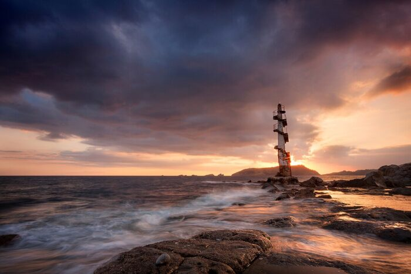
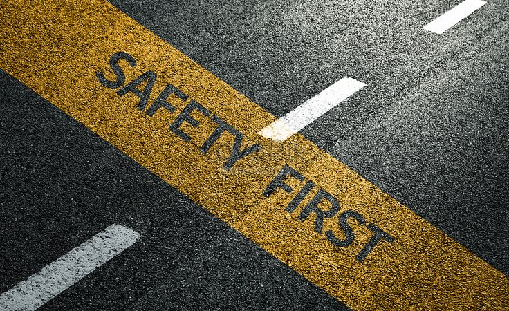
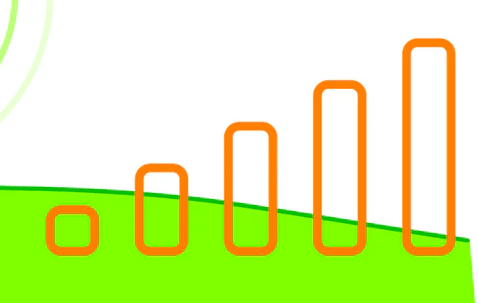
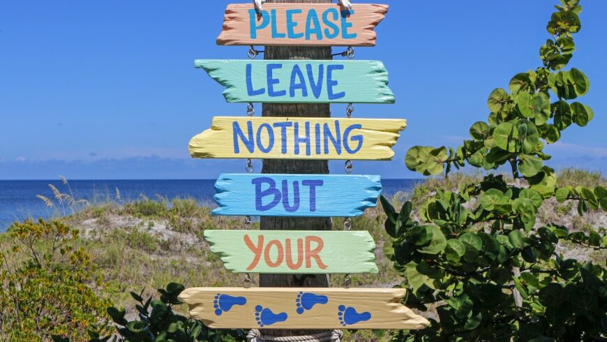
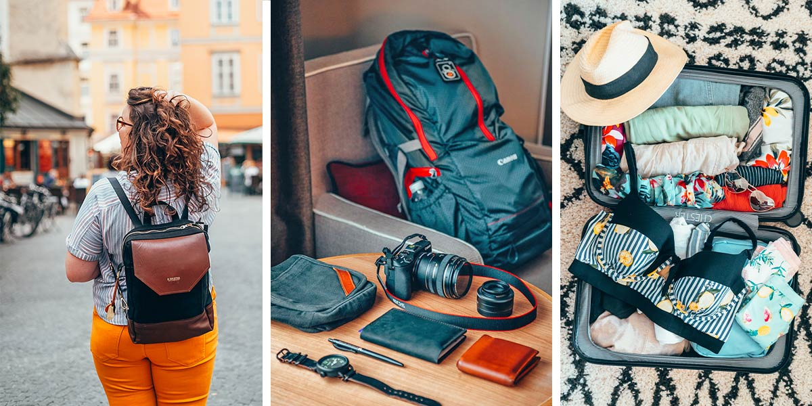

Travel Tips

November to May is ideal — dry season means clear skies, calm seas, and perfect beach and hiking conditions. Avoid June–October during typhoon season. April 9 (Araw ng Kagitingan) is a meaningful time to visit for historical immersion.
From Manila: Take a Genesis or Bataan Transit bus from EDSA-Lawton or Cubao (2–3 hrs). Within Bataan: Tricycles and jeepneys connect municipalities. For beaches and remote spots, rent a motorcycle or hire a private van. No airport — nearest is Clark International (Pampanga, ~1.5 hrs).

Bataan is generally safe for tourists. Always register at the local tourism office before trekking. Bring insect repellent and sun protection. Respect the heritage sites — no littering at shrines or beaches. Swimming areas should be checked for current advisories before entering the water.
Bataan is budget-friendly. Most heritage sites charge ₱20–₱100 entrance. Bring cash as ATMs may be limited in rural areas. Daily budget: ₱800–₱1,500 covers meals, transport, and entrance fees comfortably. Las Casas Filipinas is the priciest attraction.

Globe and DITO have decent signal in urban areas. Remote mountains and beaches may have weak or no signal. Download offline maps (Google Maps / Maps.Me) before your trip. Inform someone of your itinerary when going to isolated destinations.

Bataan takes conservation seriously — especially sea turtle protection at Morong. Do not disturb nesting turtles or hatchlings. Pack out all trash. Stay on marked trails when trekking. Support local guides and community-based tourism enterprises instead of large tour operators.

Bataan General Hospital is in Balanga City. Bring personal medications; pharmacies are available in major towns. Emergency numbers: 911 (national), Bataan Tourism: (047) 237-0900. Travel insurance is recommended, especially for adventure activities like hiking and diving.

Light, breathable clothing for the beach and town. Long sleeves and pants for forest hikes (sun + insects). Comfortable walking shoes for heritage trails. Bring your own reusable water bottle — hydration is key in the tropical heat. A small daypack works perfectly.
Bataaeños are warm and hospitable. Greet with "Magandang araw" (Good day). Dress modestly when visiting churches and shrines. Ask permission before photographing locals. When attending festivals or religious events, observe quietly and respectfully — participation is welcome when invited.